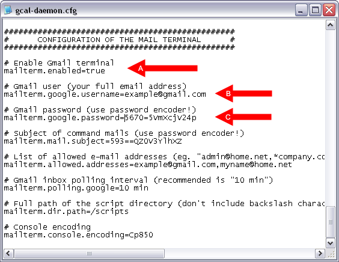
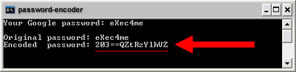
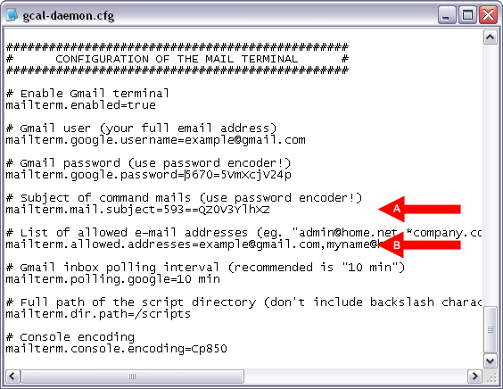
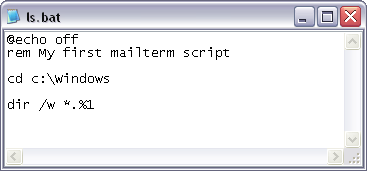
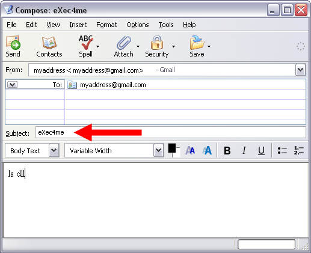
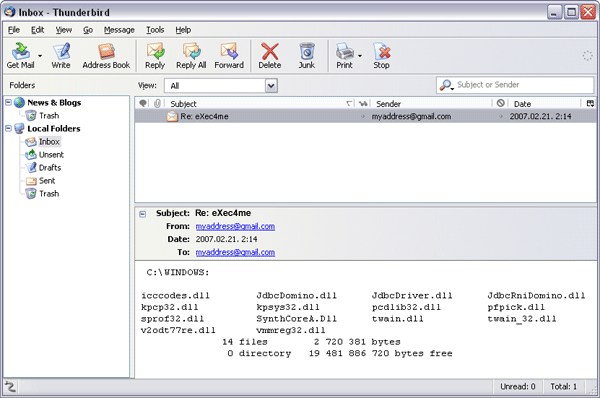

GCALDaemon's 'mailterm' service enables Gmail users to remotely control their PC by sending an email to their Gmail account.
This management service keeps checking a Gmail inbox regularly,
if it finds an email from a trusted sender and with a secret subject,
it reads and executes a specified script file.
Then GCALDaemon sends back a response, which contains the script's output.
Most mobile carriers and recent phones have built-in support for sending email through SMS gateways,
therefore a simple cellural phone should be enough to manage a computer.

1) Install GCALDaemon (Java 1.5 required).
2) Enable Gmail's IMAP service.
A) Log in to your Gmail account.
B) Click Settings at the top of any Gmail page.
C) Click Forwarding and POP/IMAP.
D) Select Enable IMAP.
E) Click Save Changes.
If you don't have 'Enable IMAP' option and your default
language is not US English, changing Gmail display language to
US English in General settings is likely to IMAP enable your Gmail.
3) Start password encoder ('password-encoder.bat' or 'password-encoder.sh').
Input your Gmail password and press ENTER. Copy the encoded password.

4) Edit the 'gcal-daemon.cfg' with text editor.
A) Set the 'mailterm.enabled' property to 'true'
B) Set the 'mailterm.google.username' property to your Gmail address
C) Set the 'mailterm.google.password' property to your encoded password

5) At the time of setup, you may choose your own unique email subject for mailterm.
This subject must be at least 6-8 characters long and contain a combination of letters and numbers.
Basically, you do not want any word or number which can be associated with you,
or typical in ordinary messages. The subject is case sensitive.
Start the password encoder again,
input your mailterm subject and press ENTER. Copy the encoded subject.

6) Edit the 'gcal-daemon.cfg' with text editor.
A) Put the encoded subject for the variable 'mailterm.mail.subject'.
B) Put the list of the trusted e-mail senders for the variable 'mailterm.allowed.addresses'.

7) Create a new script file (BAT or SH) and save this file into the mailterm's scipt folder
(e.g. '/scripts/ls.bat').
The folder's location is determined by the 'mailterm.dir.path' property.

8) Setup finished - launch GCALDaemon.
9) Create a new mail message, put your mailterm subject for the mail's title,
and enter you mailterm command in script name [optional parameters] format.
You can use either a single quotation mark (') or quotation marks (") to enclose script parameters.

10) Click on 'Send' button.
You will receive the script's output within 10 minutes after submitting your mail.

1) The 'quit' command is used to stop mailterm service.
It is intended to be used to shut down the Gmail listener process,
all other services continue to function normally.
If you have trouble with the working, try to switch the application's log level
to DEBUG, in 'GCALDaemon/conf/logger-config.cfg':
# Valid log levels: DEBUG, INFO, WARN, ERROR or FATAL
log4j.category.org.gcaldaemon=DEBUG
Then open 'log/gcal-daemon.log' file with your text editor.
This log file helps you to identify configuration problems.
2) If you use Google Apps For Your Domain you may need to clear a captcha for your email account.
Visit
https://www.google.com/a/yourdomain.org/UnlockCaptcha
then enter your email username and password, and the letters in the distorted picture.
Be sure to replace 'yourdomain.org' with your domain name.
3) Optionally start the 'service-install.bat' to install GCALDaemon as Windows service
(on UNIX-compatible systems put GCALDaemon into 'init', 'launchd' or 'rc' script).
Before uninstall GCALDaemon, you must stop and uninstall this service
(with 'service-stop.bat' and 'service-uninstall.bat').
Please note, this is the last step in the setup/configuration process,
do not install the service while GCALDaemon is not running properly.
On Vista, it's not enough to be in the Administrators group,
you need to either be actually logged on as the Administrator.
A) In START menu click on the 'Command Prompt'
B) Right click on it and select 'Properties'
C) In 'Shortcut' tab, click on 'Advanced...'
D) Tick the 'Run as Administrator'
E) Run 'Command Prompt' and in click 'Continue' in 'User Account Control' box
F) Now you are in administrator mode
G) Type 'cd [gcaldaemon installation directory]\bin'
H) Execute 'service-install.bat'
I) Execute 'service-start.bat'